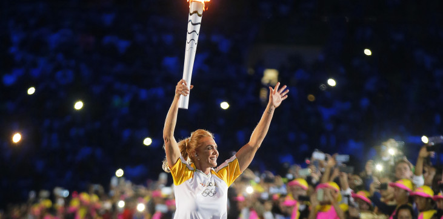
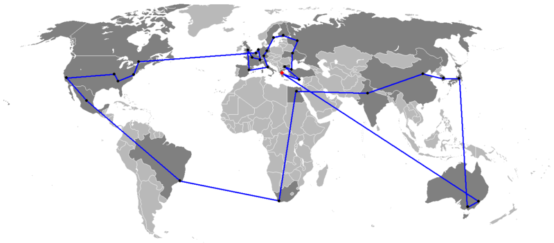

|  |  |
| Это традиция проведенная перед каждыми Олиимийсками играми. Это традиция впервые появилясь в Берлине в 1936 году. |
| Олимпийский огонь, зажженный с помощью вогнутого зеркала параболической формы от солнечных лучей в Греции, был доставлен в Берлин благодаря помощи трех тысяч трехсот тридцати одного бегуна-атлета. Таким образом, пройдя дистанцию больше чем три тысячи километров. |
| Необычние способы транспортировки |
| Обычно в эстафете Олимпийского огня принимают участие бегуны, однако используются и другие способы транспортировки. Например: в 1952 г. в эстафету были включены доставка огня на самолете и бег на лыжах; в 1988 г. – доставка на снегоходе; в 1992 г. – доставка на сверхзвуковом самолете; в 2002 г. – доставка на собачьих упряжках, санях и снегоходе, в 2006 г. – доставка на болиде команды Феррари и венецианской гондоле. |